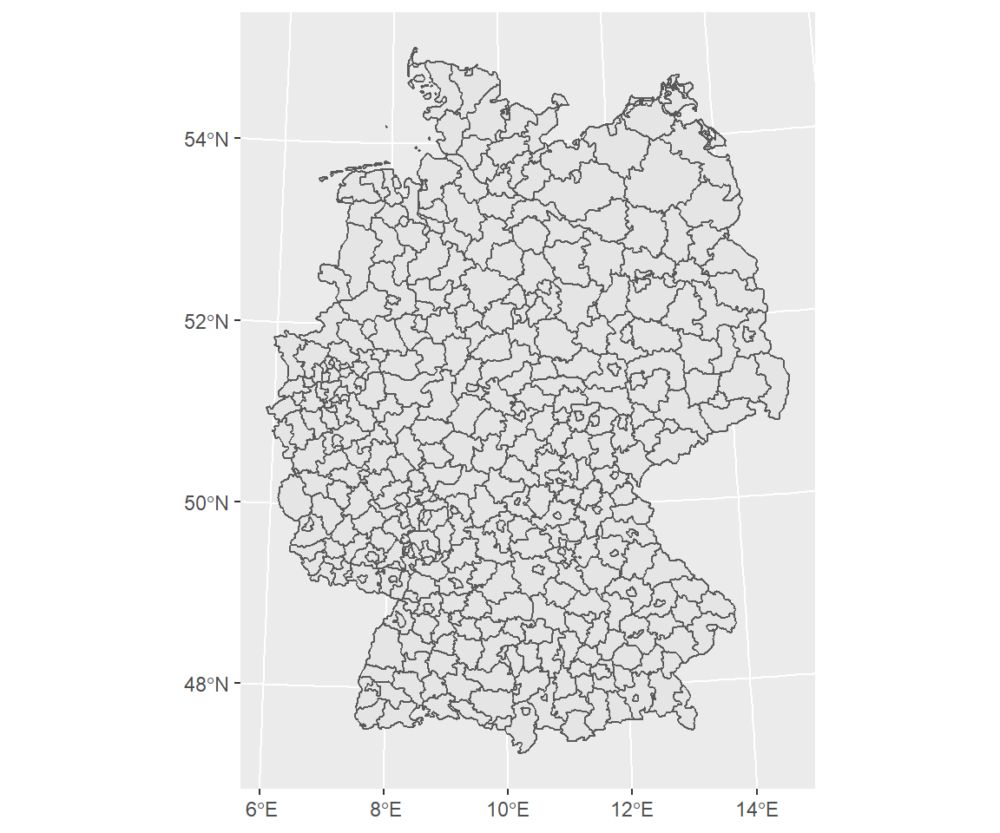
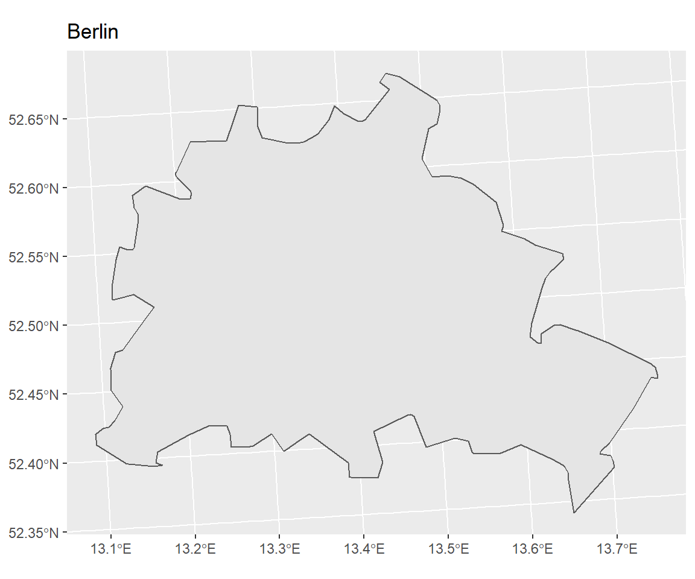
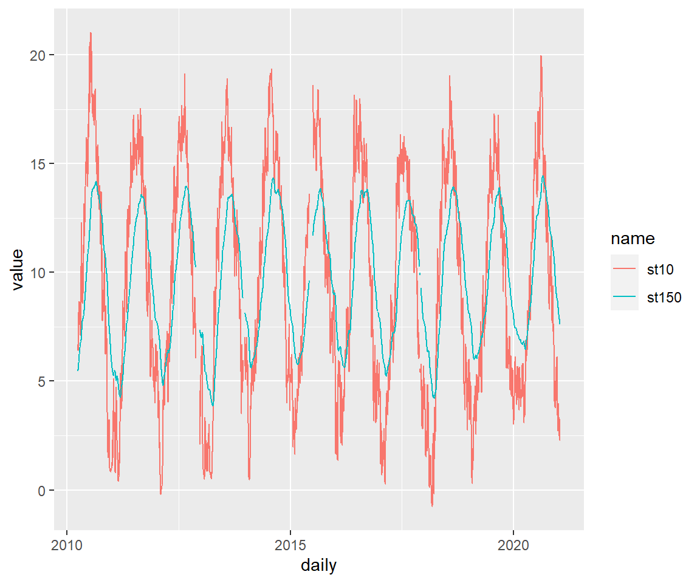

- 1 Einleitung
- 2 Erste Schritte mit R
- 3 Grundlagen
- 4 Wie lese ich Daten ein
- 5 Daten manipulieren
- 5.1 select() - Variablen auswählen (spaltenweise)
- 5.2 filter() - Filtern von Variablen (zeilenweise)
- 5.3 arrange() - Sortieren des Datensatzes
- 5.4 mutate() - Erstelle neue Variablen
- 5.5 summarize() - Zusammenfassung von Variablen
- 5.6 group_by - Gruppiere Variablen
- 5.7 across() - Anwenden von Funktionen auf Spalten
- 5.8 joins
- 5.9 pivot_longer() - Long data format
- 5.10 pivot_wider() - wider data format
- 6 Explorative-Datenanalyse
- 7 Datenvisualisierung
- 8 Karten erstellen in R üåç
- 9 Statistische Auswertungen
- 10 Datenmanagement
- 11 Reporting in Rmarkdown
- 12 Github
- 13 Bookdown
- 14 Blogdown
- 15 Shiny
- 16 Diverses
7.3 Arbeiten mit Zeiten
Man hätte dieses Kapitel auch bei dem Kapitel Daten manipulieren bringen können. Habe ich aber nicht. Warum? Zeiten sind nicht nur wichtig um Daten zu gruppieren und Statistik damit zu betreiben, sondern auch die Darstellung bei einer Abbildung muss adäquat dargestellt werden. Das wichtigste package um mit Zeiten zu arbeiten lautet lubridate::. Schauen wir uns ein subset vom Speicherkoog an:
time <- readr::read_delim("data/data.csv", delim = ";")
time <- time %>%
select(date, ST10) %>%
clean_names()
head(time, 5)
## # A tibble: 5 x 2
## date st10
## <chr> <dbl>
## 1 01.04.2010 00:00 7.42
## 2 01.04.2010 01:00 7.21
## 3 01.04.2010 02:00 7.01
## 4 01.04.2010 03:00 6.91
## 5 01.04.2010 04:00 6.81
class(time$date)
## [1] "character"Wir sehen, dass der Zeitstempel in unserem Objekt time character ist. In R ist dies kein gültiges Zeitformat, obwohl Zeitstempel in Rohdaten fast immer als string angegeben werden. Die drei grundlegenden Objekttypen für Zeiten in R lauten:
date= Angabe als “” in einem tibble. time= Angabe als “date-time= Angabe als “” in einem tibble. Auch POSIXctgenannt.
üí° Verwende immer den einfachsten Zeittyp, der deine Voraussetzungen erf√ºllt.
Es gibt drei Möglichkeiten, wo die Umwandlung zu einen date Objekt eine Rolle spielt. (i) Umwandlung von einem string, (ii) von individuellen Komponenten und (iii) von einem bestehenden date/time Objekt:
7.3.1 strings
Im deutschen wäre eine Zeitangabe 01.04.2010 aber die internationale und in R codierte Art dieses wiederzugeben lautet 2010-04-01. Die einfachste Art dies wiederzugeben lautet:
time_char <- "01.04.2010"
class(time_char)
## [1] "character"
time_date <- lubridate::as_date(time_char, format = "%d.%m.%Y")
class(time_date)
## [1] "Date"Bei dem Argument format = ... haben wir angegeben, wie das Datum hinterlegt ist und nun haben wir erfolgreich ein date Objekt erstellt.
time_char <- "01.04.2010 01:00:00"
class(time_char)
## [1] "character"
time_date <- lubridate::as_datetime(time_char, format = "%d.%m.%Y %H:%M:%S")
class(time_date)
## [1] "POSIXct" "POSIXt"Falls wir zursätzliche Zeitangaben zum Datum haben lautet die Funktion as_datetime.
Die Liste wie Datumsangaben codiert sein können findet sich unter:
?strptimeEin shortcut in lubridate geht über das Arrangement von “y”, “m”, “d”, um automatisch ein Datum zu erstellen. Die Position von y, m, d in Kombination mit einem Zeitstempel h, m, s, lässt sich flexibel verschieben:
dmy_hms("01.04.2010 01:00:00")
## [1] "2010-04-01 01:00:00 UTC"
#> [1] "2017-01-31"
mdy("January 31st, 2017")
## [1] "2017-01-31"
#> [1] "2017-01-31"
dmy_h("31-Jan-2017 01")
## [1] "2017-01-31 01:00:00 UTC"
#> [1] "2017-01-31"Die Angabe einer Zeitzone ist auch möglich:
ymd(20170131, tz = "UTC")
## [1] "2017-01-31 UTC"
#> [1] "2017-01-31 UTC"Falls in unseren Daten nur eine Jahreszahl als character angegeben wird, gibt es einen Trick ein dennoch gültiges Datum daraus zu formen. Mit dem Argument truncated lässt sich dennoch ein vollständiges Datum erstellen:
yrs <- c(2001, 2002, 2002, 2002, 2003, 2005)
lubridate::ymd(yrs, truncated = 2L)
## [1] "2001-01-01" "2002-01-01" "2002-01-01" "2002-01-01" "2003-01-01"
## [6] "2005-01-01"7.3.2 Von individuellen Komponenten
Manachmal sind die Zeitangaben auch auf verschiedene Spalten verteilt. Eine Möglichkeit ist make_date() für Datum oder make_datetime() für zusätzliche Zeitangabe:
time_char <- tibble(
year = 2010,
month = 4,
day = 1,
hour = 1,
minute = 0
)
time_char
## # A tibble: 1 x 5
## year month day hour minute
## <dbl> <dbl> <dbl> <dbl> <dbl>
## 1 2010 4 1 1 0
# Erstelle ein Datum aus den einzelnen Spalten
time_char <- time_char %>%
mutate(datetime = make_datetime(year,month,day,hour,minute))
time_char
## # A tibble: 1 x 6
## year month day hour minute datetime
## <dbl> <dbl> <dbl> <dbl> <dbl> <dttm>
## 1 2010 4 1 1 0 2010-04-01 01:00:007.3.3 Ein bestehendes Objekt
Das ganze lässt sich natürlich auch Rückwärts gestalten, sodass ich aus einem bestehenden Objekt
- year()
- month()
- mday() (day of the month)
- yday() (day of the year)
- wday() (day of the week)
- hour()
- minute()
- second()
extrahieren kann.
datetime <- ymd_hms("2016-07-08 12:34:56")
year(datetime)
## [1] 2016
#> [1] 2016
month(datetime)
## [1] 7
#> [1] 7
mday(datetime)
## [1] 8
#> [1] 8
yday(datetime)
## [1] 190
#> [1] 190
wday(datetime)
## [1] 6
#> [1] 6Für month() und wday() gibt es das Argument label = T, um den Namen anzuzeigen und mit abbr = F kann dieser ausgeschrieben angezeigt werden.
month(datetime, label = TRUE)
## [1] Jul
## 12 Levels: Jan < Feb < Mrz < Apr < Mai < Jun < Jul < Aug < Sep < ... < Dez
#> [1] Jul
#> 12 Levels: Jan < Feb < Mar < Apr < May < Jun < Jul < Aug < Sep < ... < Dec
wday(datetime, label = TRUE, abbr = FALSE)
## [1] Freitag
## 7 Levels: Sonntag < Montag < Dienstag < Mittwoch < Donnerstag < ... < Samstag
#> [1] Friday
#> 7 Levels: Sunday < Monday < Tuesday < Wednesday < Thursday < ... < SaturdayZeiten können auch gerundet werden mit den Funktionen floor_date(), round_date() und ceiling_date()
# Runden zur nächstmöglichen Einheit
x <- ymd_hms("2009-08-03 12:01:59.23")
round_date(x, "minute")
## [1] "2009-08-03 12:02:00 UTC"
#> [1] "2009-08-03 12:01:00 UTC"
# Abrunden zur angegebenen Einheit
x <- ymd_hms("2009-08-03 12:01:59.23")
floor_date(x, "minute")
## [1] "2009-08-03 12:01:00 UTC"
#> [1] "2009-08-03 12:01:00 UTC"
# Aufrunden
x <- ymd_hms("2009-08-03 12:01:59.23")
ceiling_date(x, "minute")
## [1] "2009-08-03 12:02:00 UTC"
#> "2009-08-03 12:02:00 UTC"7.3.4 Darstellung in Abbildungen
Im Folgenden schauen wir uns nun den Verlauf der Bodentemperatur in 10 cm Tiefe an. Die X Achse ist lesbar, lässt sich aber besser darstellen:
p <- koog %>%
filter(date < as.POSIXct("2010-04-30 23:00")) %>%
ggplot(aes(date, st10)) +
geom_line()
p
Die Funktion die wir dafür benötigen lautet
scale_x_datescale_x_datetimescale_x_time
p + scale_x_date(date_breaks = "1 week")
# Fehler: Invalid input: date_trans works with objects of class Date onlyü§Ø Warum geht es nicht‚Ķrichtig! Unsere Spalte date ist ein datetime Objekt und daher muss der Funktionsaufruf lauten:
# Setze die breaks wöchentlich
p + scale_x_datetime(date_breaks = "1 week")
# Wöchentliche Skalierung und KW des Jahres
p + scale_x_datetime(date_breaks = "1 week", date_labels = "%W")# Tagesbasis
p + scale_x_datetime(date_breaks = "1 day", date_labels = "%m-%d")# Tagesbasis und jetzt auch lesbar
p + scale_x_datetime(date_breaks = "4 day", date_labels = "%m-%d")# Tagesbasis und jetzt auch lesbar mit minor breaks auf Tagesbasis
p + scale_x_datetime(date_breaks = "4 day", date_labels = "%m-%d", minor_breaks = "1 day")Für alle Jahre geht dies natürlich auch:
# Default plot
koog_day %>%
ggplot(aes(daily, st10)) +
geom_line()
# Customized plot with proper labeling
koog_day %>%
ggplot(aes(daily, st10)) +
geom_line() +
scale_x_date(date_breaks = "1 year", date_labels = "%Y", minor_breaks = "1 year")